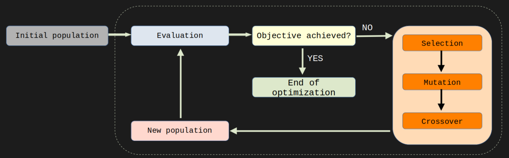

ALGORITMOS(1)ALGORITMOS(1)Particle Swarm Optimization (PSO)> [ Home ][~]$ NOMEO PSO (Particle Swarm Optimization) é um algoritmo de otimização global baseado em população que foi inspirado no comportamento de agrupamentos de animais, como pássaros e cardumes de peixes. O algoritmo começa com um grupo de partículas, cada uma representando uma solução candidata. Essas partículas se movem no espaço de busca procurando a solução ótima. Cada partícula mantém a memória de sua melhor posição encontrada até o momento e, através da interação social com as outras partículas, busca encontrar uma solução melhor. As partículas são atraídas para a posição das melhores partículas em seu grupo e também são influenciadas por sua própria melhor posição. A direção e velocidade de cada partícula são atualizadas a cada iteração do algoritmo, permitindo que elas explorem o espaço de busca de forma cooperativa. O algoritmo PSO tem sido amplamente utilizado para problemas de otimização em diversas áreas, como engenharia, ciência da computação, finanças, entre outras. Sua eficácia e facilidade de implementação o tornam uma escolha popular para a resolução de problemas de otimização complexos.
[~]$ SINOPSEAs principais caracteristicas dele sao:
- Baseado em população: o algoritmo PSO é baseado em uma população de soluções candidatas (partículas), em vez de apenas uma única solução.
- Cooperação: as partículas cooperam entre si, compartilhando informações sobre as melhores soluções encontradas. Isso permite que o algoritmo explore mais efetivamente o espaço de busca.
- Atualizações contínuas: as posições e velocidades das partículas são atualizadas continuamente em cada iteração do algoritmo, permitindo que as partículas se movam no espaço de busca.
- Memória: cada partícula mantém a memória de sua melhor posição encontrada até o momento, permitindo que ela siga em direção a essa posição.
- Flexibilidade: o algoritmo PSO pode ser facilmente adaptado para problemas de otimização com diferentes características, como problemas multi-objetivo ou com restrições.
- Eficiência: o algoritmo PSO é conhecido por sua eficiência na solução de problemas de otimização, especialmente quando comparado a outras técnicas de otimização global, como algoritmos genéticos.
- Simplicidade: o algoritmo PSO é relativamente simples e fácil de implementar, o que o torna uma opção popular para a resolução de problemas de otimização em várias áreas.
[~]$ DESCRICAOO funcionamente dele eh o seguinte:

- Uma populacao inicial eh gerada, usualmente aleatoria, porem, caso seja conhecida alguma informacao que ajude a conhecer a solucao do problema, essa informacao pode ser usada para gerar uma populacao inicial "mais adequada" ao problema.
- A populacao inicial eh entao avaliada, para saber o quao boa ela eh para o problema em questao.
- Caso ela ja seja boa o suficiente (essa suficiencia eh pre-definida e depende do problema, poder computacional, precisao desejada, etc ...), o algoritmo acaba ai, pois ja existe uma solucao boa o sufiente.
- Caso a populacao ainda nao seja uma solucao boa o suficiente eh entao aplicado os operadores do algoritmo.
- Que no caso do GA, podem ser: Selecao, Mutacao, Cruzamento, Elitismo (diversas variacoes desses operadores, bem como outros operadores foram ao longo do tempo sendo acrescentados no GA original e dao caracteristicas diferentes ao algoritmo, e pode ser uteis ou nao a depender do problema).
- Apos aplicados os operadores na populacao, uma nova populacao eh obtida com essas mudancas. Essa nova populacao pode ou nao ser mais adequada como solucao do problema.
- A nova populacao eh avaliada.
- Os passos 3-7 sao entao repetidos ate que se obtenha uma populacao que seja uma solucao suficientemente boa para o problema (ou, caso o numero maximo de geracoes pre-definido tenha sido alcancado).
[~]$ BORA FAZERVamos agora utilizar na pratica este algoritmo.
[~]$ REFERENCIAS E SUGESTOES
- Um excelente artigo que faz uma revisao do algoritmo GA:
Katoch, S., Chauhan, S.S. & Kumar, V. A review on genetic algorithm: past, present, and future. Multimed Tools Appl 80, 8091–8126 (2021). https://doi.org/10.1007/s11042-020-10139-6- Biblioteca DEAP utilizada nos codigos:
https://deap.readthedocs.io/en/master/
Félix-Antoine Fortin, François-Michel De Rainville, Marc-André Gardner, Marc Parizeau, Christian Gagné; 13(70):2171−2175, 2012.Uso deste artigo em referencias:
ECOGORA. Ecogora, © 2023. Conteúdos sobre computacao evolutiva. Disponível em: https://ecogora.vercel.app/. Acesso em: DIA MES. ANO.